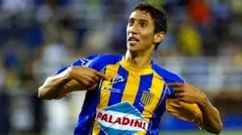

“Nuestra historia juntos tiene más páginas por escribir”: El mensaje con el que Rosario Central le dió la bienvenida a Angel Di María
El “Canalla” presentó a Angel Di María como refuerzo de lujo con un emotivo video en sus redes sociales. El campeón del mundo se incorporará al equipo luego del Mundial de Clubes.
El jugador que es hoy en día propiedad del club Benfica de Portugal, en el cual hizo su debut europeo en 2007 y también tuvo su regreso histórico hace poco menos de dos años, llega libre a jugar al club que lo vió nacer futbolísticamente.
Gonzalo Belloso , presidente de Rosario Central, tuvo múltiples intentos de repatriar a Ángel Di María pero todas estas se vieron frustradas. La más reciente tuvo que ver con las amenazas de muerte que sufrieron algunos de los integrantes de su familia que hicieron que repensara la decisión, concluyendo en su no vinculación con el club. Ahora parece que Angelito podrá cumplir su sueño de volver.
¿Cómo fue su paso por Central?
En el conjunto rosarino, “Fideo” jugó 39 partidos oficiales entre competiciones nacionales e internacionales donde logró convertir 6 goles y dar 2 asistencias.
Debutó en la temporada 2005/2006, más específicamente el 14 de diciembre de 2005, bajo las órdenes técnicas de Ángel Tulio Zof a la edad de 17 años ante Independiente de Avellaneda. En esta primera temporada vistiendo los colores de Central disputó 14 partidos, 10 en la liga y 4 en Copa Libertadores y, aunque no habían llegado los goles, ya se veían destellos de lo que sería un jugador de jerarquía.
Ya en la temporada siguiente, más consolidado, jugó 25 partidos en los cuales hizo 6 goles y asistió 2 veces. Su último partido con los Auriazules fue el 16 de junio de 2007 en la derrota 3-1 ante Colón de Santa Fe donde Di María marcó el único tanto a favor del encuentro. Poco después el Benfica realizó una oferta por el delantero poniendo 8 millones de euros para poder hacerse del talento del joven argentino.
¿Cuándo se espera ver a Di María en su vuelta a Central?
Ariel Holan y el resto del cuerpo técnico esperan contar con el campeón del mundo y de América con la Selección Argentina para el Torneo Clausura, luego de la conclusión del Mundial de Clubes, por lo que es muy probable verlo en el Gigante de Arroyito en la primera fecha contra Godoy Cruz.